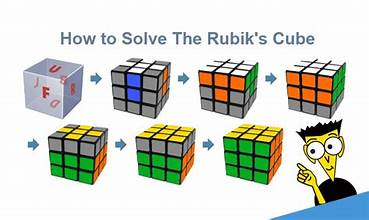
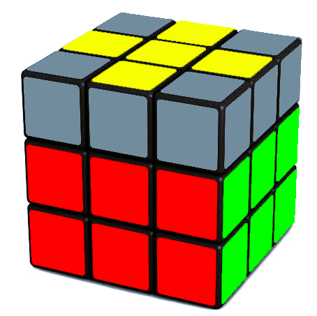

This page has a description and a video showing how to solve a Rubik's cube.
Rubiks Cube multimedia
Introduction
The Rubik's Cube is a classic puzzle that can look overwhelming at first, but it becomes very manageable once you learn a beginner friendly method. This walkthrough explains the basic steps for solving a cube, and includes visuals and a video to help you understand the process.
What You Need
A standard 3x3 Rubik’s Cube
Good lighting (helps with color recognition)
Patience during the first few attempts
Video Demonstration
The video below walks through the basic steps on how to solve a Rubik's Cube. It was made by me a long time ago and is not a full video for algorithms to finish solving the cube.
Basic Steps

This will be a basic overview going over the steps to solve a Rubik's Cube.
1. Solve the White Cross
This step creates a plus shape on the white face that matches the center colors of the adjacent sides.
2. Solve the White Corners
Insert each white corner piece so the entire white face is solved.
3. Solve the Middle Layer
This step positions the edge pieces so the middle row is complete.
4. Solve the Yellow (Final) Layer
The yellow face starts unsolved. Use simple moves to form a yellow cross.

Then use another algorithm to get the yellow corners in place.
Lastly you can use a couple of diferent algorithms to rotate the corners and solve it fully.
5. Celebrate solving the Rubik's Cube.
Now you know how to solve a Rubik's Cube.
Final Tips
The more you practice the steps, the faster you will become at recognizing patterns and moving smoothly through the solution. Beginners often take ten to fifteen minutes per solve, and that time improves naturally with repetition.
Please take a look at the link page for some helpful sites if you are courious about speed solving or other twisty puzzles.